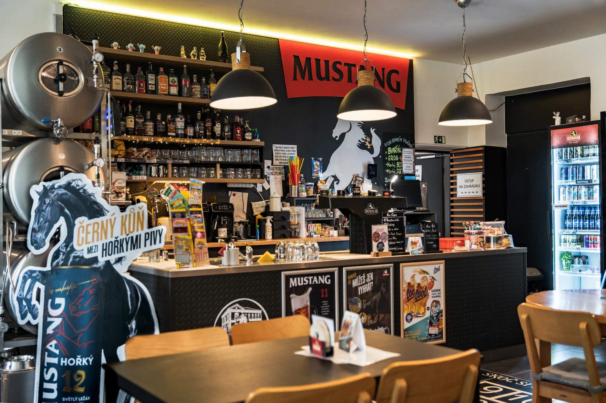
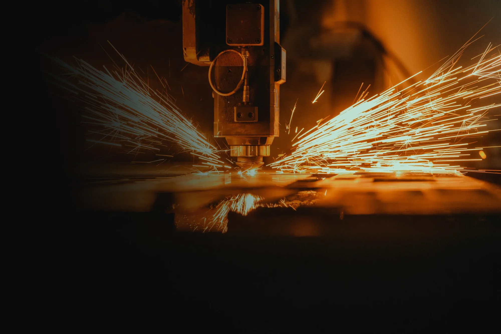

Portfolio — David Salvet
ZAHRADNICTVÍ KOHOUT
zahradnictvikohout.cz

TANKOVNA NA ROŽKU
tankovnanarozku.cz

DOBYKOVO
dobykovo.cz
PŘIPRAVUJI
Další projekt na cestě
Fotografie
Portfolio — David Salvet
zahradnictvikohout.cz

tankovnanarozku.cz

dobykovo.cz
Další projekt na cestě
Fotografie